| |
| Version | 5.0 (draft 2) |
| Editors | Mark Davis (Google Inc.), Peter Edberg (Apple Inc.) |
| Date | 2017-03-27 |
| This Version | http://www.unicode.org/reports/tr51/tr51-11.html |
| Previous Version | http://www.unicode.org/reports/tr51/tr51-9.html |
| Latest Version | http://www.unicode.org/reports/tr51/ |
| Latest Proposed Update | http://www.unicode.org/reports/tr51/proposed.html |
| Revision | 11 |
This document provides design guidelines for improving the interoperability of emoji characters across platforms and implementations. It also provides data that designates which characters are considered to be emoji, which emoji should be displayed by default with a text style versus an emoji style, and which can be displayed with a variety of skin tones.
This is a draft document which may be updated, replaced, or superseded by other documents at any time. Publication does not imply endorsement by the Unicode Consortium. This is not a stable document; it is inappropriate to cite this document as other than a work in progress.
A Unicode Technical Standard (UTS) is an independent specification. Conformance to the Unicode Standard does not imply conformance to any UTS.
Please submit corrigenda and other comments with the online reporting form [Feedback]. Related information that is useful in understanding this document is found in the References. For the latest version of the Unicode Standard, see [Unicode]. For a list of current Unicode Technical Reports, see [Reports]. For more information about versions of the Unicode Standard, see [Versions].
Emoji are pictographs (pictorial symbols) that are typically presented in a colorful cartoon form and used inline in text. They represent things such as faces, weather, vehicles and buildings, food and drink, animals and plants, or icons that represent emotions, feelings, or activities.
Emoji on smartphones and in chat and email applications have become extremely popular worldwide. As of March 2015, for example, Instagram reported that “nearly half of text [on Instagram] contained emoji.” Individual emoji also vary greatly in popularity (and even by country), as described in the SwiftKey Emoji Report. See emoji press page for details about these reports and others.
Emoji are most often used in quick, short social media messages, where they connect with the reader and add flavor, color, and emotion. Emoji do not have the grammar or vocabulary to substitute for written language. In social media, emoji make up for the lack of gestures, facial expressions, and intonation that are found in speech. They also add useful ambiguity to messages, allowing the writer to convey many different possible concepts at the same time. Many people are also attracted by the challenge of composing messages in emoji, and puzzling out emoji messages.
The word emoji comes from the Japanese:
絵 (e ≅ picture) 文 (mo ≅ writing) 字 (ji ≅ character).
Emoji may be represented internally as graphics or they may be represented by normal glyphs encoded in fonts like other characters. These latter are called emoji characters for clarity. Some Unicode characters are normally displayed as emoji; some are normally displayed as ordinary text, and some can be displayed both ways.
There’s been considerable media attention to emoji since they appeared in the Unicode Standard, with increased attention starting in late 2013. For example, there were some 6,000 articles on the emoji appearing in Unicode 7.0, according to Google News. See the emoji press page for many samples of such articles, and also the Keynote from the 38th Internationalization & Unicode Conference.
Emoji became available in 1999 on Japanese mobile phones. There was an early proposal in 2000 to encode DoCoMo emoji in the Unicode standard. At that time, it was unclear whether these characters would come into widespread use—and there was not support from the Japanese mobile phone carriers to add them to Unicode—so no action was taken.
The emoji turned out to be quite popular in Japan, but each mobile phone carrier developed different (but partially overlapping) sets, and each mobile phone vendor used their own text encoding extensions, which were incompatible with one another. The vendors developed cross-mapping tables to allow limited interchange of emoji characters with phones from other vendors, including email. Characters from other platforms that could not be displayed were represented with 〓 (U+3013 GETA MARK), but it was all too easy for the characters to get corrupted or dropped.
When non-Japanese email and mobile phone vendors started to support
email exchange with the Japanese carriers, they ran into those
problems. Moreover, there was no way to represent these characters in
Unicode, which was the basis for text in all modern programs. In
2006, Google started work on converting Japanese emoji to Unicode
private-use codes, leading to the development of internal mapping
tables for supporting the carrier emoji via Unicode characters in 2007 .
.
There are, however, many problems with a private-use approach, and thus a proposal was made to the Unicode Consortium to expand the scope of symbols to encompass emoji. This proposal was approved in May 2007, leading to the formation of a symbols subcommittee, and in August 2007 the technical committee agreed to support the encoding of emoji in Unicode based on a set of principles developed by the subcommittee. The following are a few of the documents tracking the progression of Unicode emoji characters.
| Date | Doc No. | Title | Authors |
|---|---|---|---|
| 2000-04-26 | L2/00-152 | NTT DoCoMo Pictographs | Graham Asher (Symbian) |
| 2006-11-01 | L2/06-369 | Symbols (scope extension) | Mark Davis (Google) |
| 2007-08-03 | L2/07-257 | Working Draft Proposal for Encoding Emoji Symbols | Kat Momoi, Mark Davis, Markus Scherer (Google) |
| 2007-08-09 | L2/07-274R | Symbols draft resolution | Mark Davis (Google) |
| 2007-09-18 | L2/07-391 | Japanese TV Symbols (ARIB) | Michel Suignard (Microsoft) |
| 2009-01-30 | L2/09-026 | Emoji Symbols Proposed for New Encoding | Markus Scherer, Mark Davis, Kat Momoi, Darick
Tong (Google); Yasuo Kida, Peter Edberg (Apple) |
| 2009-03-05 | L2/09-025R2 | Proposal for Encoding Emoji Symbols | |
| 2010-04-27 | L2/10-132 | Emoji Symbols: Background Data | |
| 2011-02-15 | L2/11-052R | Wingdings and Webdings Symbols | Michel Suignard |
To find the documents in this table, see UTC Documents.
In 2009, the first Unicode characters explicitly intended as emoji were added to Unicode 5.2 for interoperability with the ARIB (Association of Radio Industries and Businesses) set. A set of 722 characters was defined as the union of emoji characters used by Japanese mobile phone carriers: 114 of these characters were already in Unicode 5.2. In 2010, the remaining 608 emoji characters were added to Unicode 6.0, along with some other emoji characters. In 2012, a few more emoji were added to Unicode 6.1, and in 2014 a larger number were added to Unicode 7.0. Additional characters have been added since then, based on the Selection Factors found in Submitting Emoji Character Proposals.
Here is a summary of when some of the major sources of pictographs used as emoji were encoded in Unicode. Each source may include other characters in addition to emoji, and Unicode characters can correspond to multiple sources. The L column contains single-letter abbreviations of the various sources for use in charts [emoji-charts] and data files [emoji-data]. Characters that do not correspond to any of these sources can be marked with Other (x).
| Source | Abbr |
L |
Dev. Starts |
Released |
Unicode Version
|
Sample Character |
|||
|---|---|---|---|---|---|---|---|---|---|
B&W |
Color
|
Code |
CLDR Short Name | ||||||
| Zapf Dingbats | ZDings |
z |
1989 |
1991-10 |
U+270F |
pencil | |||
| ARIB | ARIB |
a |
2007 |
2008-10-01 |
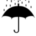
|
U+2614 |
umbrella with rain drops | ||
| Japanese carriers | JCarrier |
j |
2007 |
2010-10-11 |
U+1F60E |
smiling face with sunglasses | |||
| Wingdings & Webdings | WDings |
w |
2010 |
2014-06-16 |
U+1F336 |
hot pepper | |||
For a detailed view of when various source sets of emoji were added to Unicode, see Emoji Version Sources [emoji-charts]. The data file [JSources] shows the correspondence to the original Japanese carrier symbols.
People often ask how many emoji are in the Unicode Standard. This question does not have a simple answer, because there is no clear line separating which pictographic characters should be displayed with a typical emoji style. For a complete picture, see Which Characters are Emoji.
The colored images used in this document and associated charts [emoji-charts] are for illustration only. They do not appear in the Unicode Standard, which has only black and white images. They are either made available by the respective vendors for use in this document, or are believed to be available for non-commercial reuse. Inquiries for permission to use vendor images should be directed to those vendors, not to the Unicode Consortium. For more information, see Rights to Emoji Images.
The term emoticon refers to a series of text characters (typically punctuation or symbols) that is meant to represent a facial expression or gesture (sometimes when viewed sideways), such as the following.
;-)
Emoticons predate Unicode and
emoji,
but were later adapted to include Unicode characters. The
following examples use not only ASCII characters, but also U+203F ( ‿
), U+FE35 ( ︵ ), U+25C9 ( ◉ ), and U+0CA0 ( ಠ ).
^‿^
◉︵◉
ಠ_ಠ
Often implementations allow emoticons to be used to input emoji. For
example, the emoticon ;-) can be mapped to  in a
chat window. The term emoticon is sometimes used in a
broader sense, to also include the emoji for facial expressions and
gestures. That broad sense is used in the Unicode block name Emoticons,
covering the code points from U+1F600 to U+1F64F.
in a
chat window. The term emoticon is sometimes used in a
broader sense, to also include the emoji for facial expressions and
gestures. That broad sense is used in the Unicode block name Emoticons,
covering the code points from U+1F600 to U+1F64F.
Unicode is the foundation for text in all modern software: it’s how all mobile phones, desktops, and other computers represent the text of every language. People are using Unicode every time they type a key on their phone or desktop computer, and every time they look at a web page or text in an application. It is very important that the standard be stable, and that every character that goes into it be scrutinized carefully. This requires a formal process with a long development cycle. For example, the 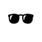 dark sunglasses character was first proposed years before it was released in Unicode 7.0.
Characters considered for encoding must normally be in widespread use
as elements of text. The emoji and various symbols were added to
Unicode because of their use as characters for text-messaging in a
number of Japanese manufacturers’ corporate standards, and other
places, or in long-standing use in widely distributed fonts such as
Wingdings and Webdings. In many cases, the characters were added for
complete round-tripping to and from a source set, not
because they were inherently of more importance than other
characters. For example, the  clamshell
phone character was included because it was in Wingdings and
Webdings, not because it is more important than, say, a “skunk”
character.
clamshell
phone character was included because it was in Wingdings and
Webdings, not because it is more important than, say, a “skunk”
character.
In some cases, a character was added to complete a set: for example,
a  rugby football
character was added to Unicode 6.0 to complement the
rugby football
character was added to Unicode 6.0 to complement the  american
football character (the
american
football character (the  soccer ball had
been added back in Unicode 5.2). Similarly, a mechanism was added
that could be used to represent all country flags (those
corresponding to a two-letter unicode_region_subtag),
such as the flag for Canada,
even though the Japanese carrier set only had 10 country flags.
soccer ball had
been added back in Unicode 5.2). Similarly, a mechanism was added
that could be used to represent all country flags (those
corresponding to a two-letter unicode_region_subtag),
such as the flag for Canada,
even though the Japanese carrier set only had 10 country flags.
The data does not include non-pictographs, except for those in Unicode that are used to represent characters from emoji sources, for compatibility, such as:
 or
or
Game pieces, such as the dominos (üÄ∞ üı üÄ≤ ... üÇë üÇí), are currently
not included as emoji, with the exceptions of U+1F0CF (  ) PLAYING CARD BLACK JOKER and U+1F004 (
) PLAYING CARD BLACK JOKER and U+1F004 (  )
MAHJONG TILE RED DRAGON. These are included because they correspond
each to an emoji character from one of the carrier sets.
)
MAHJONG TILE RED DRAGON. These are included because they correspond
each to an emoji character from one of the carrier sets.
The selection factors used to weigh the encoding of prospective candidates are found in Selection Factors in Submitting Emoji Character Proposals. That document also provides instructions for submitting proposals for new emoji.
For a list of frequently asked questions on emoji, see the Unicode Emoji FAQ.
This document provides:
It also provides background information about emoji, and discusses longer-term approaches to emoji.
As new Unicode characters are added or the “common practice” for emoji usage changes, the data and recommendations supplied by this document may change in accordance. Thus the recommendations and data will change across versions of this document.
The following provide more formal definitions of some of the terms used in this document. Readers who are more interested in other features of the document may choose to continue from Section 2 Design Guidelines.
ED-1. emoji — A colorful pictograph that can be used inline in text. Internally the representation is either (a) an image or (b) an encoded character. The term emoji character can be used for (b) where not clear from context.
ED-2. emoticon — (1) A series of text characters (typically punctuation or symbols) that is meant to represent a facial expression or gesture such as ;-) (2) in a broader sense, also includes emoji for facial expressions and gestures.
ED-3. emoji character — A character that is recommended for use as emoji.
- These are the characters with the Emoji property. See Annex A: Emoji Properties and Data Files.
ED-4. (This definition has been removed.)
ED-5. (This definition has been removed.)
For more information, see Section 3 Which Characters are Emoji.
ED-6. default emoji presentation character — A character that, by default, should appear with an emoji presentation, rather than a text presentation.
- These characters have the Emoji_Presentation property. See Annex A: Emoji Properties and Data Files.
ED-7. default text presentation character — A character that, by default, should appear with a text presentation, rather than an emoji presentation.
- These characters do not have the Emoji_Presentation property; that is, their Emoji_Presentation property value is No. See Annex A: Emoji Properties and Data Files.
For more details about emoji and text presentation, see Section 2 Design Guidelines and Section 4 Presentation Style.
ED-8. text presentation selector — The character U+FE0E VARIATION SELECTOR-15, used to request a text presentation for an emoji character. Also known as text variation selector.
ED-8a. text presentation sequence — A variation sequence listed in emoji-variation-sequences.txt [emoji-data] that contains a text presentation selector.
ED-9. emoji presentation selector — The character U+FE0F VARIATION SELECTOR-16, used to request an emoji presentation for an emoji character. Also known as emoji variation selector.
ED-9a. emoji presentation sequence — A variation sequence listed in emoji-variation-sequences.txt [emoji-data] that contains an emoji presentation selector.
ED-10. (This definition has been removed.)
ED-11. emoji modifier — A character that can be used to modify the appearance of a preceding emoji in an emoji modifier sequence.
- These characters have the Emoji_Modifier property. See Annex A: Emoji Properties and Data Files.
ED-12. emoji modifier base — A character whose appearance can be modified by a subsequent emoji modifier in an emoji modifier sequence.
- These characters have the Emoji_Modifier_Base property. See Annex A: Emoji Properties and Data Files.
- They are also listed in Characters Subject to Emoji Modifiers.
ED-13. emoji modifier sequence — A sequence of the following form:
emoji_modifier_sequence :=
  emoji_modifier_base emoji_modifier
For more details about emoji modifiers, see Section 2.2 Diversity.
ED-14. emoji flag sequence — A sequence of two Regional Indicator characters, where the corresponding ASCII characters are valid region sequences as specified by Unicode region subtags in [CLDR], with idStatus="regular" or "deprecated". See also Annex B: Valid Emoji Flag Sequences. A singleton Regional Indicator character is called an ill-formed emoji flag sequence.
emoji_flag_sequence :=
  regional_indicator regional_indicatorED-14a. emoji tag sequence (ETS) — A sequence of the following form:
emoji_tag_sequence := tag_base tag_spec tag_term
tag_base           := emoji_character
| emoji_modifier_sequence
                    | emoji_presentation_sequence
tag_spec           := [\x{E0020}-\x{E007E}]+
tag_term           := \x{E007F}
- The
tag_specconsists of all characters from U+E0020 TAG SPACE to U+E007E TAG TILDE. Eachtag_specdefines a particular visual variant to be applied to thetag_basecharacter(s). Thoughtag_specincludes the values U+E0041 TAG LATIN CAPITAL LETTER A .. U+E005A TAG LATIN CAPITAL LETTER Z, they are not used currenty and are reserved for future extensions.- The
tag_termconsists of the character U+E007F CANCEL TAG, and must be used to terminate the sequence.The meaning and validity criteria for an
emoji_tag_sequenceand expected visual variants for atag_specare determined by Annex C: Valid Emoji Tag Sequences. A sequence of tag characters that is not part of a emoji tag sequence is called an ill-formed emoji tag sequence.ED-14b. emoji combining sequence — A sequence of the following form:
emoji_combining_sequence :=
( emoji_character | emoji_presentation_sequence | text_presentation_sequence )non_spacing_mark*ED-14c. emoji keycap sequence — An emoji combining sequence of the following form:
emoji_keycap_sequence := [0-9#*] \x{FE0F 20E3}
- These characters are in the emoji-sequences.txt file listed under the category Emoji_Combining_Keycap_Sequence
ED-15. emoji core sequence — A sequence of the following form:
emoji_core_sequence :=
  emoji_combining_sequence
| emoji_modifier_sequence
| emoji_flag_sequenceED-15a. emoji zwj element — A more limited element that can be used in an emoji ZWJ sequence, as follows:
emoji_zwj_element :=
  emoji_character
| emoji_presentation_sequence
| emoji_modifier_sequenceED-16. emoji zwj sequence — An emoji sequence with at least one joiner character.
emoji_zwj_sequence :=
  emoji_zwj_element ( ZWJ emoji_zwj_element )+ED-17. emoji sequence — A core sequence or ZWJ sequence, as follows:
emoji_sequence :=
  emoji_core_sequence
| emoji_zwj_sequence
| emoji_tag_sequenceED-18. fully-qualified emoji zwj sequence — An emoji zwj sequence in which every default text presentation character (ED-7) is either followed by an emoji modifier or followed by an emoji presentation selector, and there are no other emoji or text presentation selectors in the sequence.
ED-19. non-fully-qualified emoji zwj sequence — An emoji zwj sequence that is not a fully-qualified emoji zwj sequence.
For recommendations on the use of variation selectors in emoji sequences, see Section 2.4 Emoji Implementation Notes.
The following sets are defined based on the data files and properties described in Annex A: Emoji Properties and Data Files. The composition of these sets may change from one release to the next.
ED-20. basic emoji set — The set of emoji code points and emoji presentation sequences intended for general-purpose input.
ED-21. standard emoji keycap sequence set — The specific set of emoji sequences listed in the emoji-sequences.txt file [emoji-data] under the category Emoji_Keycap_Sequence.
ED-22. standard emoji modifier sequence set — The specific set of emoji sequences listed in the emoji-sequences.txt file [emoji-data] under the category Emoji_Modifier_Sequence.
ED-23. standard emoji flag sequence set — The specific set of emoji sequences listed in the emoji-sequences.txt file [emoji-data] under the category Emoji_Flag_Sequence.
ED-24. standard emoji tag sequence set — The specific set of emoji sequences listed in the emoji-sequences.txt file [emoji-data] under the category Emoji_Tag_Sequence.
ED-25. standard emoji ZWJ sequence set — The specific set of emoji sequences listed in the emoji-zwj-sequences.txt file [emoji-data].
Conformance to this specification is specified by the following clauses.
C1. An implementation claiming conformance to this specification shall identify the version of this specification to which conformance is claimed.
C2. An implementation claiming conformance to this specification shall identify which of the capabilities specified below are supported for which emoji sets ED-20 through ED-25. This must include at least the C2a display capability for set ED-20 basic emoji set. For example, an implementation can declare that it supports the display, editing and input capabilities for the basic emoji set, and the display and editing capabilities for the standard emoji modifier sequence set, and may make no claim of capabilities for any other sets.
| C2a display | The implementation is capable of displaying each of the characters and sequences in the specified set as a single glyph with emoji presentation. |
| C2b editing | The implementation treats each of the characters and sequences in the specified set as an indivisible unit for editing purposes (cursor movement, deletion, line breaking, and so on). |
| C2c input | The implementation provides a mechanism for inputting each of the characters and sequences in the specified set as a single glyph with emoji presentation. |
An implementation may claim partial conformance to C2, specifying the set of characters that it does not support. For example, an implementation could claim conformance to C2 for all emoji sets and capabilities except for the set [‚èè {üá∫üá≥}], that is:
Review Note: We may need to soften the requirements to allow characters without emoji presentation selectors.
C3. An implementation claiming conformance to this specification must not support an invalid emoji_flag_sequence or invalid or ill-formed emoji_tag_sequence for display or input, except for a fallback display depiction indicating the presence of an invalid sequence, such as .
An implementation may support any of the following for display, editing, or input:
Implementations can claim conformance for emoji collation or short names by conforming to a particular version of CLDR.
Character names in all capitals are the formal Unicode Name property values, such as U+1F473 MAN WITH TURBAN. The formal names are immutable internal identifiers, but often do not reflect the current practice for interpretation of the character.
Lowercase character names for existing existing characters or sequences are CLDR short names, such as U+1F473 person wearing turban. Lowercase names may also be illustrative names, such as for the sequence <U+1F399 U+20E0> no microphones
Unicode characters can have many different presentations as text. An "a" for example, can look quite different depending on the font. Emoji characters can have two main kinds of presentation:
More precisely, a text presentation is a simple foreground shape whose color which is determined by other information, such as setting a color on the text, while an emoji presentation determines the color(s) of the character, and is typically multicolored. In other words, when someone changes the text color in a word processor, a character with an emoji presentation will not change color.
Any Unicode character can be presented with a text presentation, as in the Unicode charts. For the emoji presentation, both the name and the representative glyph in the Unicode chart should be taken into account when designing the appearance of the emoji, along with the images used by other vendors. The shape of the character can vary significantly. For example, here are just a few of the possible images for U+1F36D LOLLIPOP, U+1F36E CUSTARD, U+1F36F HONEY POT, and U+1F370 SHORTCAKE:
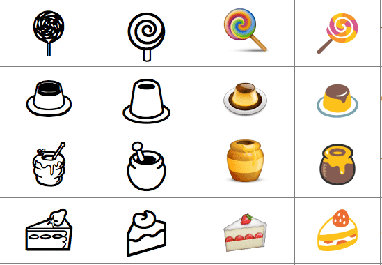
While the shape of the character can vary significantly, designers
should maintain the same “core” shape, based on the shapes used
mostly commonly in industry practice. For example, a U+1F36F HONEY
POT encodes for a pictorial representation of a pot of honey, not for
some semantic like "sweet". It would be unexpected to
represent U+1F36F HONEY POT as a sugar cube, for example. Deviating
too far from that core shape can cause interoperability problems: see
accidentally-sending-friends-a-hairy-heart-emoji.
Direction (whether a person or object faces to the right or left, up
or down) should also be maintained where possible, because a change
in direction can change the meaning: when sending 

 “crocodile shot by
police”, people expect any recipient to see the pistol pointing in
the same direction as when they composed it. Similarly, the U+1F6B6 pedestrian
should face to the left
“crocodile shot by
police”, people expect any recipient to see the pistol pointing in
the same direction as when they composed it. Similarly, the U+1F6B6 pedestrian
should face to the left  , not to the right.
, not to the right.
General-purpose emoji for people and body parts should also not be
given overly specific images: the general recommendation is to be as
neutral as possible regarding race, ethnicity, and gender. Thus for
the character U+1F777 CONSTRUCTION WORKER, the
recommendation is to use a neutral graphic like
 (with an orange skin tone)
instead of an overly specific image like
(with a light skin tone). This includes the
emoji modifier base characters
listed in
Sample Emoji Modifier Bases.
The emoji modifiers allow for variations in skin tone to
be expressed.
(with an orange skin tone)
instead of an overly specific image like
(with a light skin tone). This includes the
emoji modifier base characters
listed in
Sample Emoji Modifier Bases.
The emoji modifiers allow for variations in skin tone to
be expressed.
Unicode 9.0 adds several characters intended to complete gender pairs, and there are ongoing efforts to provide more gender choices in the future. For more information, see the Unicode Emoji FAQ.
Names of symbols such as BLACK MEDIUM SQUARE or WHITE MEDIUM SQUARE are not meant to indicate that the corresponding character must be presented in black or white, respectively; rather, the use of “black” and “white” in the names is generally just to contrast filled versus outline shapes, or a darker color fill versus a lighter color fill. Similarly, in other symbols such as the hands U+261A BLACK LEFT POINTING INDEX and U+261C WHITE LEFT POINTING INDEX, the words “white” and “black” also refer to outlined versus filled, and do not indicate skin color.
However, other color words in the name, such as YELLOW, typically provide a recommendation as to the emoji presentation, which should be followed to avoid interoperability problems.
Emoji characters may not always be displayed on a white background. They are often best given a faint, narrow contrasting border to keep the character visually distinct from a similarly colored background. Thus a Japanese flag would have a border so that it would be visible on a white background, and a Swiss flag have a border so that it is visible on a red background.
Current practice is for emoji to have a square aspect ratio, deriving from their origin in Japanese. For interoperability, it is recommended that this practice be continued with current and future emoji.
Flag emoji characters are discussed in Annex B: Valid Emoji Flag Sequences .
Combining marks may be applied to emoji, just like they can be applied to other characters. When that is done, the combination should take on an emoji presentation. For example, a is represented as the sequence "1" plus an emoji presentation selector plus U+20E3 COMBINING ENCLOSING KEYCAP. Systems are unlikely, however, to support arbitrary combining marks with arbitrary emoji. Aside from U+20E3, the most likely to be supported is:
For example:
However, U+20E0 and U+20E3 are the only combining marks recommended for such usage.
The following human-form emoji are currently considered to have explicit gender appearance based on the name and/or practice. They intentionally contrast with other characters. This list may change in the future.
U+1F466 boy
U+1F467 girl
U+1F468 man
U+1F469 woman
U+1F474 old man
U+1F475 old woman
U+1F46B man and woman holding hands
U+1F46C two men holding hands
U+1F46D two women holding hands
U+1F385 Santa Claus
U+1F936 Mrs. Claus
U+1F478 princess
U+1F934 prince
U+1F483 woman dancing
U+1F57A man dancing
U+1F470 bride with veil
U+1F935 man in tuxedo
U+1F930 pregnant woman
U+1F931 breast-feeding
U+1F9D5 woman with headscarf
U+1F574 man in business suit levitating
U+1F472 man with Chinese cap
All other human-form emoji representing people should be depicted in a gender-neutral
way, unless gender appearance is explicitly specified using some
other mechanism such as an emoji ZWJ sequence
with a FEMALE SIGN or MALE SIGN.
People all over the world want to have emoji that reflect more human diversity, especially for skin tone. The Unicode emoji characters for people and body parts are meant to be generic, yet following the precedents set by the original Japanese carrier images, they are often shown with a light skin tone instead of a more generic (nonhuman) appearance, such as a yellow/orange color or a silhouette.
Five symbol modifier characters that provide for a range of skin
tones for human emoji were released in Unicode Version 8.0
(mid-2015). These characters are based on the six tones of the
Fitzpatrick scale, a recognized standard for dermatology (there are
many examples of this scale online, such as FitzpatrickSkinType.pdf).
The exact shades may vary between implementations.
| Code | CLDR Short Name | Unicode Character Name | Samples | |
|---|---|---|---|---|
| U+1F3FB | light skin tone | EMOJI MODIFIER FITZPATRICK TYPE-1-2 | ||
| U+1F3FC | medium-light skin tone | EMOJI MODIFIER FITZPATRICK TYPE-3 | ||
| U+1F3FD | medium skin tone | EMOJI MODIFIER FITZPATRICK TYPE-4 | ||
| U+1F3FE | medium-dark skin tone | EMOJI MODIFIER FITZPATRICK TYPE-5 | ||
| U+1F3FF | dark skin tone | EMOJI MODIFIER FITZPATRICK TYPE-6 | ||
These characters have been designed so that even where diverse color images for human emoji are not available, readers can see the intended meaning.
When used alone, the default representation of these modifier characters is a color swatch. Whenever one of these characters immediately follows certain characters (such as WOMAN), then a font should show the sequence as a single glyph corresponding to the image for the person(s) or body part with the specified skin tone, such as the following:
 + 
+  → 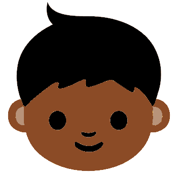
→ 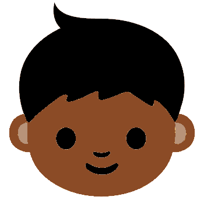
However, even if the font doesn’t show the combined character, the user can still see that a skin tone was intended:


This may fall back to a black and white stippled or hatched image such as when colorful emoji are not supported.
+  →
→
When a human emoji is not immediately followed by a emoji modifier character, it should use a generic, non-realistic skin tone, such as:
RGB #FFCC22 (one of the
colors typically used for the smiley faces)RGB #3399CCRGB #CCCCCCFor example, the following set uses gray as the generic skin tone:

No particular hair color is required, however, dark hair is generally regarded as more neutral because people of every skin tone can have black (or very dark brown) hair. One exception is PERSON WITH BLOND HAIR, which needs to have blond hair regardless of skin tone.
To have an effect on an emoji, an emoji modifier must immediately follow that base emoji character. Emoji presentation selectors are neither needed nor recommended for emoji characters when they are followed by emoji modifiers, and should not be used in newly generated emoji modifier sequences; the emoji modifier automatically implies the emoji presentation style. See ED-13. emoji modifier sequence. However, some older data may include defective emoji modifier sequences in which an emoji presentation selector does occur between the base emoji character and the emoji modifier; this is the only exception to the rule that an emoji modifier must immediately follow the character that it modifies. In this case the emoji presentation selector should be ignored. For handling text presentation selectors in sequences, see Section 4 Presentation Style.
<U+270C VICTORY HAND, FE0F, TYPE-3>
Any other intervening character causes the emoji modifier to appear as a free-standing character. Thus
 + 
+   + 
 +  →
→ 

Emoji for multi-person groupings present some special challenges:
The basic solution for each of these cases is to represent the
multi-person grouping as a sequence of characters—a separate
character for each person intended to be part of the grouping, along
with characters for any other symbols that are part of the grouping.
Each person in the grouping could optionally be followed by an emoji
modifier. For example, conveying the notion of COUPLE WITH HEART for
a couple involving two women can use a sequence with WOMAN followed
by an emoji-style HEAVY BLACK HEART followed by another WOMAN
character; each of the WOMAN characters could have an emoji modifier
if desired.
This makes use of conventions already found in current emoji usage, in which certain sequences of characters are intended to be displayed as a single unit.
Implementations can present the emoji modifiers as separate characters in an input palette, or present the combined characters using mechanisms such as long press.
The emoji modifiers are not intended for combination with arbitrary emoji characters. Instead, they are restricted to the emoji modifier base characters: no other characters are to be combined with emoji modifiers. This set may change over time, with successive versions of this document. To find the exact list of emoji modifier bases for each version, use the Emoji_Modifer_Base character property, as described in Annex A: Emoji Properties and Data Files.
The following chart shows the expected display with emoji modifiers, depending on the preceding character and the level of support for the emoji modifier. The “Unsupported” rows show how the character would typically appear on a system that does not have a font with that character in it: with a missing glyph indicator. If an emoji modifier base has no skin visible on a particular system, then the following emoji modifier should be suppressed.
| Support Level | Emoji Modifier Base | Sequence | Display Color | Display B&W |
|---|---|---|---|---|
| Fully supported | Yes |   |   | |
| Yes, but no skin visible | 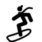  | |||
| No (for example, fuel pump) |
||||
| Fallback | Yes | |||
| No | ||||
| Unsupported | Yes |   | ||
| No |
As noted above at the end of Section 2.2 Diversity, emoji presentation selectors are neither needed nor recommended for use in emoji modifier sequences. See ED-13. emoji modifier sequence. However, older data may include defective emoji modifier sequences which do include emoji presentation selectors.
A supported emoji modifier sequence should be treated as a single
grapheme cluster for editing purposes (cursor moment, deletion,
and so on); word break, line break, and so on. For input, the composition of
that cluster does not need to be apparent to the user: it appears on
the screen as a single image. On a phone, for example, a long-press
on a human figure can bring up a minipalette of different skin tones,
without the user having to separately find the human figure and then
the modifier. The following shows some possible appearances:
| |
or
|
|
Of course, there are many other types of diversity in human appearance besides different skin tones: Different hair styles and color, use of eyeglasses, various kinds of facial hair, different body shapes, different headwear, and so on. It is beyond the scope of Unicode to provide an encoding-based mechanism for representing every aspect of human appearance diversity that emoji users might want to indicate. The best approach for communicating very specific human images—or any type of image in which preservation of specific appearance is very important—is the use of embedded graphics, as described in Longer Term Solutions.
The U+200D ZERO WIDTH JOINER (ZWJ) can be used between the elements of a sequence of characters to indicate that a single glyph should be presented if available. An implementation may use this mechanism to handle such an emoji zwj sequence as a single glyph, with a palette or keyboard that generates the appropriate sequences for the glyphs shown. To the user of such a system, these behave like single emoji characters, even though internally they are sequences.
When an emoji zwj sequence is sent to a system that does not have a corresponding single glyph, the ZWJ characters are ignored and a fallback sequence of separate emoji is displayed. Thus an emoji zwj sequence should only be defined and supported by implementations where the fallback sequence would also make sense to a recipient.
For example, the following are possible displays:
| Sequence | Display | Combined glyph? |
|---|---|---|
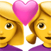
|
Yes |
|
No |
See also the Emoji ZWJ Sequences [emoji-charts].
The use of ZWJ sequences may be difficult in some implementations, so caution should taken before adding new sequences.
For recommendations on the use of variation selectors in ZWJ sequences, see Section 2.4 Emoji Implementation Notes below.
This section describes important implementation features of emoji, including the use of emoji and text presentation selectors, how to do segmentation, and handling of TAG characters.
| Characters | Variation / Behavior | |
|---|---|---|
| singleton, emoji combining sequence |
may contain an emoji or text presentation selector | |
| should have emoji presentation selectors on base characters with Emoji_Presentation=No whenever an emoji presentation is desired | ||
| emoji flag sequence | does not contain an emoji or text presentation selector | |
| should be displayed with an emoji presentation by default | ||
| emoji modifier sequence | does not contain an emoji or text presentation selector | |
should be displayed with an emoji
presentation by default, whether or not the modifier base has Emoji_Presentation=Yes
|
||
| emoji zwj sequence | may have an emoji presentation selector The recommended behavior is: User Input​:
|
|
Some changes to rules and data are needed for best segmentation behavior of additional emoji zwj sequences, prior to the eventual publication of Unicode 10.0. Such changes are included in CLDR Version 31 [CLDR31].
The properties for TAG characters U+E0020..U+E007F (TAG SPACE..CANCEL TAG) have been modified for use in indicating variants or extensions of emoji characters. For detailed information on handling TAG sequences correctly, see Annex C: Valid Emoji Tag Sequences.
However, the fallback behavior of the TAG characters is not optimal. It is strongly recommented that any implementation mark a sequence of TAG characters after an emoji character or sequence with a distinctive appearance, such as modifying the image for that character or sequence by overlaying a question mark as shown below.
There are different ways to count the emoji in Unicode, especially since sequences of emoji may appear as single emoji image. The following provides an overview of the ways to count emoji. There is no single number; it can be (for example):
It is recommended that any font or keyboard whose goal is to support Unicode emoji should support the characters and sequences listed in the [emoji-data] data files. The best definition of the full set is in the emoji-test.txt file.
The following table provides more detail about the various counts as of Unicode Emoji version 4.0.
There is a “Subtotal” row in the table below. Emoji components (single Regional Indicators, keycap bases, …) are not typically used as emoji by themselves, so they are listed as “components”. There are only 26 Regional Indicator (RI) code points, which are used in pairs. Some of these 676 pairs may be displayed as emoji flags, and others may not (the valid pairs are defined in Annex B: Valid Emoji Flag Sequences ).
There are also a number of ZWJ sequences that typically have the same image as some singleton or modifier sequence, because vendors aren't yet supporting “gender-neutral” forms. These are listed under “typical dup” below. The Subtotal line does not include these components or typical dup values, and so is a better reflection of what people would see on emoji keyboards/palettes. The keyboards may also use mechanisms like “long press” to handle emoji modifier sequences, further reducing the number of visible cells by subtracting the rows with modifier.
Review Note: The following table has been completely changed. For legibility, it is not in yellow. TODO: Verify counts before final release.
| Smileys & People | Animals & Nature | Food & Drink | Travel & Places | Activities | Objects | Symbols | Flags | Other | Total | |
|---|---|---|---|---|---|---|---|---|---|---|
| character | 297 | 113 | 102 | 207 | 60 | 162 | 193 | 5 | 1,139 | |
| keycap seq | 12 | 12 | ||||||||
| flag seq | 258 | 258 | ||||||||
| tag seq | 3 | 3 | ||||||||
| modifier seq | 510 | 510 | ||||||||
| zwj seq + gender | 43 | 43 | ||||||||
| zwj seq + modifier | 160 | 160 | ||||||||
| zwj seq + gender + modifier | 195 | 195 | ||||||||
| zwj seq other | 61 | 1 | 62 | |||||||
| Subtotal | 1,266 | 113 | 102 | 207 | 60 | 162 | 205 | 267 | 0 | 2,382 |
| component | 5 | 38 | 43 | |||||||
| typical dup | 241 | 241 | ||||||||
| Total | 1,512 | 113 | 102 | 207 | 60 | 162 | 205 | 267 | 38 | 2,666 |
Separate [emoji-charts] provide more information on many of these subsets and others, for example:
Certain emoji have defined variation sequences, in which an emoji character can be followed by an invisible emoji presentation selector or text presentation selector.
This capability was added in Unicode 6.1. Some systems may also provide this distinction with higher-level markup, rather than variation sequences. For more information on these selectors, see Emoji Presentation Sequences [emoji-charts]. For details regarding the use of emoji or text presentation selectors in emoji sequences specifically, see Section 2.4 Emoji Implementation Notes.
Implementations should support both styles of presentation for the characters with emoji and text presentation sequences, if possible. Most of these characters are emoji that were unified with preexisting characters. Because people are now using emoji presentation for a broader set of characters, Unicode 9.0 adds emoji and text presentation sequences for all emoji with default text presentation (see discussion below). These are the characters shown in the column labeled “Default Text Style; no VS in U8.0” in the Text vs Emoji chart [emoji-charts].
However, even for cases in which the emoji and text presentation selectors are available, it had not been clear for implementers whether the default presentation for pictographs should be emoji or text. That means that a piece of text may show up in a different style than intended when shared across platforms. While this is all a perfectly legitimate for Unicode characters—presentation style is never guaranteed—a shared sense among developers of when to use emoji presentation by default is important, so that there are fewer unexpected and "jarring" presentations. Implementations need to know what the generally expected default presentation is, to promote interoperability across platforms and applications.
There had been no clear line for implementers between three categories of Unicode characters:
These categories can be distinguished using properties listed in Annex A: Emoji Properties and Data Files. The first category are characters with Emoji=Yes and Emoji_Presentation=Yes. The second category are characters with Emoji=Yes and Emoji_Presentation=No. The third category are characters with Emoji=No.
The presentation of a given emoji character depends on the environment, whether or not there is an emoji or text presentation selector, and the default presentation style (emoji vs text). In informal environments like texting and chats, it is more appropriate for most emoji characters to appear with a colorful emoji presentation, and only get a text presentation with a text presentation selector. Conversely, in formal environments such as word processing, it is generally better for emoji characters to appear with a text presentation, and only get the colorful emoji presentation with the emoji presentation selector.
Based on those factors, here is typical presentation behavior. However, these guidelines may change with changing user expectations.
| Example Environment | with Emoji presentation selector |
with Text presentation selector |
with neither |
|
|---|---|---|---|---|
text-default |
emoji-default |
|||
| word processing | ||||
| plain web pages | ||||
| texting, chats | ||||
As of Unicode 9.0, every emoji character with a default text presentation allows for an emoji or text presentation selector. Thus the presentation of these characters can be controlled on a character-by-character basis. The characters that can have these selectors applied to them are listed in Emoji Variation Sequences [emoji-charts].
In addition, the next two sections describe two other mechanisms for globally controlling the emoji presentation: Using language tags with locale extensions, or using special script codes. Though these are new mechanisms and not yet widely supported, vendors are encouraged to support the locale extension for most general usage such as in browsers; the special script codes may be appropriate for more specific usage such as OpenType font selection, or in APIs. For more information, see [CLDR].
The locale extension “-em” can be used to specify desired presentation for characters that may have both text-style and emoji-style presentations available. There are three values that can be used, here illustrated with “sr-Latn”:
| Locale Code | Description |
|---|---|
| sr-Latn-u-em-emoji | use an emoji presentation for emoji characters where possible |
| sr-Latn-u-em-text | use a text presentation for emoji characters where possible |
| sr-Latn-u-em-default | use the default presentation (only needed to reset an inherited -em setting). |
This can be used in HTML, for example, with
<html lang="sr-Latn-u-em-emoji">.
Note that this approach does not have the disadvantages listed below
for the script-tag approach.
Two script subtags can be used to control the presentation style. These use script codes defined by ISO 15924 but given more specific semantics by CLDR, see unicode_script_subtag:
These script codes are not suitable for use in general language tags:
However, they may be useful by themselves in specific contexts such as OpenType font selection, or in APIs that take script codes.
Other approaches for control of emoji presentation are also in use. For example, in some CSS implementations, if any font in the lookup list is an emoji font, then emoji presentation is used whenever possible.
Neither the Unicode code point order, nor the standard Unicode Collation ordering (DUCET), are currently well suited for emoji, since they separate conceptually-related characters. From the user's perspective, the ordering in the following selection of characters sorted by DUCET appears quite random, as illustrated by the following example:


 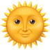
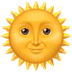 

The emoji-ordering chart file shows an ordering for emoji characters that groups them together in a more natural fashion. This data has been incorporated into [CLDR].


This ordering groups characters presents a cleaner and more expected ordering for sorted lists of characters. The groupings include: faces, people, body-parts, emotion, clothing, animals, plants, food, places, transport, and so on. The ordering also groups more naturally for the purpose of selection in input palettes. However, for sorting, each character must occur in only one position, which is not a restriction for input palettes. See Section 6 Input.
Emoji are not typically typed on a keyboard. Instead, they are
generally picked from a palette, or recognized via a dictionary. The
mobile keyboards typically have a  button to select a palette
of emoji, such as in the left image below. Clicking on the
button to select a palette
of emoji, such as in the left image below. Clicking on the  button reveals a palette, as in the right image.
button reveals a palette, as in the right image.

|

|
The palettes need to be organized in a meaningful way for users. They typically provide a small number of broad categories, such as People, Nature, and so on. These categories typically have 100-200 emoji.
Many characters can be categorized in multiple ways: an orange is both a plant and a food. Unlike a sort order, an input palette can have multiple instances of a single character. It can thus extend the sort ordering to add characters in any groupings where people might reasonably be expected to look for them.
More advanced palettes will have long-press enabled, so that people can press-and-hold on an emoji and have a set of related emoji pop up. This allows for faster navigation, with less scrolling through the palette.
Annotations for emoji characters are much more finely grained
keywords. They can be used for searching characters, and are often
easier than palettes for entering emoji characters. For example, when
someone types “hourglass” on their mobile phone, they could see and
pick from either of the matching emoji characters  or . That is often much easier than scrolling through
the palette and visually inspecting the screen. Input mechanisms may
also map emoticons to emoji as keyboard shortcuts: typing
:-) can result in
or . That is often much easier than scrolling through
the palette and visually inspecting the screen. Input mechanisms may
also map emoticons to emoji as keyboard shortcuts: typing
:-) can result in  .
.
In some input systems, a word or phrase bracketed by colons is used
to explicitly pick emoji characters. Thus typing in “I saw an :ambulance:”
is converted to “I saw an  ”. For completeness,
such systems might support all of the full Unicode names, such as :first
quarter moon with face: for
”. For completeness,
such systems might support all of the full Unicode names, such as :first
quarter moon with face: for  . Spaces within the phrase
may be represented by _, as in the following:
. Spaces within the phrase
may be represented by _, as in the following:
“my :alarm_clock: didn’t work”
→
“my  didn’t work”.
didn’t work”.
However, in general the full Unicode names are not especially suitable for that sort of use; they were designed to be unique identifiers, and tend to be overly long or confusing.
Searching includes both searching for emoji characters in queries,
and finding emoji characters in the target. These are most useful
when they include the annotations as synonyms or hints. For example,
when someone searches for  on yelp.com,
they see matches for “gas station”. Conversely, searching for “gas
pump” in a search engine could find pages containing
on yelp.com,
they see matches for “gas station”. Conversely, searching for “gas
pump” in a search engine could find pages containing  . Similarly, searching for “gas pump” in an email
program can bring up all the emails containing
. Similarly, searching for “gas pump” in an email
program can bring up all the emails containing  .
.
There is no requirement for uniqueness in both palette categories and
annotations: an emoji should show up wherever users would expect it.
A gas pump  might show up under “object” and
“travel”; a heart
might show up under “object” and
“travel”; a heart  under “heart” and
“emotion”, a
under “heart” and
“emotion”, a  under “animal”, “cat”, and “heart”.
under “animal”, “cat”, and “heart”.
Annotations are language-specific: searching on yelp.de,
someone would expect a search for  to result in matches for “Tankstelle”. Thus
annotations need to be in multiple languages to be useful across
languages. They should also include regional annotations within a
given language, like “petrol station”, which people would expect
search for
to result in matches for “Tankstelle”. Thus
annotations need to be in multiple languages to be useful across
languages. They should also include regional annotations within a
given language, like “petrol station”, which people would expect
search for  to result in on yelp.co.uk.
An English annotation cannot simply be translated into different
languages, since different words may have different associations in
different languages. The emoji
to result in on yelp.co.uk.
An English annotation cannot simply be translated into different
languages, since different words may have different associations in
different languages. The emoji  may be associated with Mexican or Southwestern restaurants in the US,
but not be associated with them in, say, Greece.
may be associated with Mexican or Southwestern restaurants in the US,
but not be associated with them in, say, Greece.
There is one further kind of annotation, called a TTS name,
for text-to-speech processing. For accessibility when reading text,
it is useful to have a short, descriptive name for an emoji
character. A Unicode character name can often serve as a basis for
this, but its requirements for name uniqueness often ends up with
names that are overly long, such as black right-pointing
double triangle with vertical bar for  .
TTS names are also outside the current scope of this document.
.
TTS names are also outside the current scope of this document.
The longer-term goal for implementations should be to support embedded graphics, in addition to the emoji characters. Embedded graphics allow arbitrary emoji symbols, and are not dependent on additional Unicode encoding. Some examples of this are found in Skype and LINE—see the emoji press page for more examples.
However, to be as effective and simple to use as emoji characters, a full solution requires significant infrastructure changes to allow simple, reliable input and transport of images (stickers) in texting, chat, mobile phones, email programs, virtual and mobile keyboards, and so on. (Even so, such images will never interchange in environments that only support plain text, such as email addresses.) Until that time, many implementations will need to use Unicode emoji instead.
For example, mobile keyboards need to be enhanced. Enabling embedded graphics would involve adding an additional custom mechanism for users to add in their own graphics or purchase additional sets, such as a sign to add an image to the palette above. This would prompt the user to paste or otherwise select a graphic, and add annotations for dictionary selection.
With such an enhanced mobile keyboard, the user could then select those graphics in the same way as selecting the Unicode emoji. If users started adding many custom graphics, the mobile keyboard might even be enhanced to allow ordering or organization of those graphics so that they can be quickly accessed. The extra graphics would need to be disabled if the target of the mobile keyboard (such as an email header line) would only accept text.
Other features required to make embedded graphics work well include the ability of images to scale with font size, inclusion of embedded images in more transport protocols, switching services and applications to use protocols that do permit inclusion of embedded images (for example, MMS versus SMS for text messages). There will always, however, be places where embedded graphics can’t be used—such as email headers, SMS messages, or file names. There are also privacy aspects to implementations of embedded graphics: if the graphic itself is not packaged with the text, but instead is just a reference to an image on a server, then that server could track usage.
The following binary character properties are available for emoji characters. These are not formally part of the Unicode Character Database (UCD), but share the same namespace and structure.
| Property | Property Values |
|---|---|
| Emoji | =Yes for characters that are emoji =No otherwise |
| Emoji_Presentation | =Yes for characters that have emoji
presentation by default =No otherwise |
| Emoji_Modifier | =Yes for characters that are emoji
modifiers =No otherwise |
| Emoji_Modifier_Base | =Yes for characters that can serve as a
base for emoji modifiers =No otherwise |
| Emoji_Component | =Yes for characters that normally do not appear on emoji keyboards as separate choices, such as Keycap base characters, Regional_Indicators, …. =No otherwise |
If Emoji=No, then Emoji_Presentation=No, Emoji_Modifier=No, and Emoji_Modifier_Base=No.
The following data files are included in the release (see [emoji-data]):
| emoji-data.txt | Property value for the properties listed in the Emoji Properties table |
|---|---|
| emoji-sequences.txt | Sequences used to represent emoji |
| emoji-zwj-sequences.txt | |
| emoji-variation-sequences.txt | All permissible emoji presentation sequences and text presentation sequences |
| emoji-test.txt | Test file for emoji characters and sequences |
See [emoji-charts] for a collection of charts that have been generated from the emoji data file that may be useful in helping to understand it and the related [CLDR] emoji data (annotations and ordering). These charts are not versioned, and are purely illustrative; the data to use for implementation is in [emoji-data].
26 REGIONAL INDICATOR symbols are used in pairs to represent regions; these pairs are generally displayed as flags in systems that support them as emoji. While the syntax of an emoji emoji flag sequence is defined in ED-14, only valid sequences should be usedare displayed as flags by conformant implementations, where:
Some region sequences represent countries (as recognized by the United Nations, for example); others represent territories that are associated with a country. Such territories may have flags of their own, or may use the flag of the country with which they are associated. Depictions of images for flags may be subject to constraints by the administration of that region.
Caveats:
For additional information see the sub-section on Regional Indicator Symbols in Section 22.10 Enclosed and Square of [Unicode].
Emoji are generally presented with a square aspect ratio, which presents a problem for flags. The flag for Qatar is over 150% wider than tall; for Switzerland it is square; for Nepal it is over 20% taller than wide. To avoid a ransom-note effect, implementations may want to use a fixed ratio across all flags, such as 150%, with a blank band on the top and bottom. (The average width for flags is between 150% and 165%.) Presentation as a “waving” flag, or clipping to a circle, can help to present a uniform appearance, masking the aspect differences.
Flags should have a visible edge. One option is to use a 1 pixel gray line chosen to be contrasting with the adjacent field color.
For an open-source set of flag images (png and svg), see region-flags.
Options for presenting an emoji_flag_sequence for which a system does not have a specific flag or other glyph include:
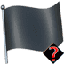
The code point order of flags is by region code, which will not be intuitive for users, since that rarely matches the order of countries in the user's language. English speakers are surprised that the flag for Germany comes before the flag for Djibouti. An alternative is to present the sorted order according to the localized country name, using [CLDR] data.
While the general syntax of emoji tag sequences is defined in
ED-14a, not
all possible tag sequences are valid. The only valid sequences in this version
of Unicode Emoji are defined by sections in this annex, which specify valid
combinations of <tag_base> characters and
<tag_spec> sequences and their expected presentation. Conformant implementations only
display valid sequences as emoji, and display invalid sequences with a special presentation to show that they are invalid, such
as in the examples below.
In examples in this section, underlined ASCII characters represent
the corresponding tag characters, while ✦ represents the tag_term.
A valid flag emoji tag sequence must satisfy the following constraints:
tag_base and tag_spec are limited to the following:
tag_base |
U+1F3F4 BLACK FLAG |
tag_spec |
(U+E0030 TAG DIGIT ZERO .. U+E0039 TAG DIGIT NINE, U+E0061 TAG LATIN SMALL LETTER A .. U+E007A TAG LATIN SMALL LETTER Z)+ |
tag_spec to a character in [0-9a-z] by subtracting 0xE0000.
Notes:
tag_spec, unlike ISO subdivisions like “GB-SCT”.Review Note:¬†The UTC is considering limiting the total length of possible valid tag sequences to some value such as 32. It would appreciate feedback on whether the length of tag sequences should be limited, and if so, to what length.
A completely tag-unaware implementation will display any any sequence of TAG characters as invisible, without any effect on adjacent characters. The following sections apply to conformant implementations that support at least one tag sequence.
An implementation may support emoji tag sequences, but not support a particular valid emoji tag sequence.
Images for unsupported valid emoji tag sequences must indicate that the sequence image is missing, by showing the base glyph with either a following “missing emoji glyph” or with an overlay “missing” glyph. The overlay glyph approach is recommended, so that the sequence would have the same width as if supported. A tag-unaware implementation (TU) will show just the base character.
| Sequence | Sample Images |
Comments | Standard sequence? | |||
|---|---|---|---|---|---|---|
| Supported | Unsupported | TU | ||||
| gbeng✦ | 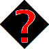 | England | Yes |
|||
| gbsct✦ | Scotland | Yes | ||||
| gbwls✦ | Wales | Yes | ||||
| usca✦ | California | No | ||||
| caon✦ | Ontario | No | ||||
| chzh✦ | Canton Zürich | No | ||||
| frnor✦ | Normandy | No | ||||
Images for invalid (but well-formed) emoji tag sequences must not be interpreted as if they were regular emoji tag sequences for a different appearance. They must instead indicate that there is something wrong with the sequence. The recommended approach is to also show the base glyph with either a following “missing emoji glyph” or with an overlay “missing” glyph.
| Sequence | Rec. Images | TU | Comments | |
|---|---|---|---|---|
| ushuh✦ | Incorrect subregion with “us’ region | |||
| uksct✦ | No “uk” region so incorrect subregion | |||
| Base invalid for flag tag emoji sequence | ||||
| Invalid base and tag_spec — not conformant to show as a ”demon“ or other non-missing image | ||||
Images for an ill-formed tag sequence should indicate that there is something wrong with the sequence. The recommended approach is to show the ill-formed tag squence as a “missing emoji glyph”.
| Sequence | Rec. Images | TU | Comments |
|---|---|---|---|
| Ausca✦ | A | A | No emoji base |
| usca✦ | No base | ||
| uksct | A | A | No terminator |
| uksct | No base, no terminator |
Mark Davis and Peter Edberg created the initial versions of this document, and maintain the text.
Thanks to Shervin Afshar, Julie Allen, Rachel Been, Nicole Bleuel, Jeremy Burge, Michele Coady, Chenjintao (陈锦涛), Chenshiwei, Peter Constable, Craig Cummings, Agustin Fonts, Asmus Freytag, Claudia Galvan, Andrew Glass, Paul Hunt, Tayfun Karadeniz, Hiroyuki Komatsu, Jennifer 8. Lee, Norbert Lindenberg, Ken Lunde, Gwyneth Marshall, Rick McGowan, Katsuhiko Momoi, Lisa Moore, Katsuhiro Ogata, Katrina Parrott, Michelle Perham, Addison Phillips, Roozbeh Pournader, Judy Safran-Aasen, Markus Scherer, Alolita Sharma, Richard Tunnicliffe, and Ken Whistler for feedback on and contributions to this document and related data and charts, including earlier versions.
Review Note: Update the above for additional Unicode Emoji Subcommittee members.
Thanks to Adobe / Paul Hunt, Apple, Emojination, Emojipedia, EmojiXpress, Michael Everson, Google, Microsoft, and iDiversicons for supplying images for illustration in this document.
The content for this section, discussing right and acknowledgments, has been moved to Emoji Images and Rights.
The following summarizes modifications from the previous revisions of this document.
Revisions 10 and 11
Modifications for prior versions can be found by going to Version 4.0 of this specification.
© 2017 Unicode, Inc. All Rights Reserved. The Unicode Consortium makes no expressed or implied warranty of any kind, and assumes no liability for errors or omissions. No liability is assumed for incidental and consequential damages in connection with or arising out of the use of the information or programs contained or accompanying this technical report. The Unicode Terms of Use apply.
Unicode and the Unicode logo are trademarks of Unicode, Inc., and are registered in some jurisdictions.